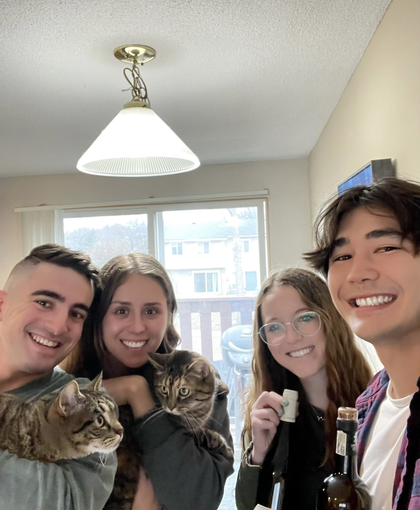
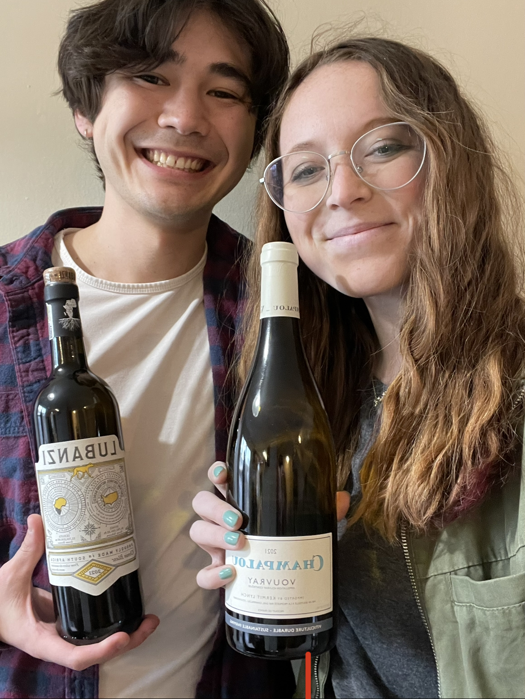

Chenin Blanc
What is it??
Chenin blanc is a white grape most commonly grown in South Africa, though it is also commonly found in the Loire Valley of France. Though there are regional variations, Chenin blanc has a characteristic acidity, regardless of where it is grown [4]. South African Chenin blanc wines are often characterized by notes of quince, yellow apple, pear, chamomile, and honey. In contrast, Chenin blanc wines produced from grapes grown in the Loire Valley of France have primary flavors of quince, pear, pomelo, ginger, and tarragon.
Chenin blanc has also some variation based on where it is grown. Grapes grown in colder areas tend to be used in off-dry styles of the wine, whereas some other regions and winemakers produce a dry wine [3]. It is even possible to find sparkling Chenin blanc varieties.
We had this wine at a game night with our good friends, and we paired it with tacos. The wines were relatively easy to drink and seemed to go pretty well with our food, though suggested pairing is Asian cuisine [2]. These wines were found at bin 105 in Lincoln. Along with finding some excellent wine choices, we were very happy to find such a delightful store. The wines are sustainably produced and the store itself features a wine tasting bar. We also really liked the owner, Steve. Highly recommend bin 105 to anyone interested in a neat little location.
Lubanzi
Molly's Rating and Tasting Notes
6.0. Relatively strong essence of cantaloupe on the nose. There weren't as many fruity flavors as I was expecting, and it was much more dry than expected. I got a slight taste of pear and yellow apple on the tongue, but these were hints at most. The finish is very dry, and I would go as far as to say that the finish was not very clean. I don't know how often I'd drink this wine, especially if the other Chenin blanc was available.
Ryan's Rating and Tasting Notes
5.9. On the nose it is actually quite delightful with notes of cantaloupe, yellow apple, and pear. There is also an indiscernable citrusy/tart note, maybe it's the quince that people have described? However, it is very different on the tongue. The first word that came to my mind while tasting it was "dirt". There's a nondescript sour flavor, as well upon initial taste. Digging deeper under the soil taste, there's a briny quality similar to that of an olive. At the end there are very brief instances of flavor similar to what I believe it would be like to experiencing moments of your life flashing before your eyes before you die. These flavors include honeydew, chamomile, apple cider, and dried out moist towelette. Overall, not a wine that I enjoy very much at all.
Champalou Vouvray
Molly's Rating and Tasting Notes
6.2. This wine was much lighter in color than the other Chenin blanc. I also couldn't pick up much on the nose, though it does smell slightly sweeter, somehow. There are maybe notes of quince or pear on the tongue, but these were very hard to detect. Some saline-esque notes on the tongue. Also a dry finish. A more pleasant wine to drink than the other Chenin blanc (for me).
Ryan's Rating and Tasting Notes
6.1. Upon first glance, you could have fooled me and said it was water. It is a very light looking wine with not much color. On the nose it is very delicate. I'm getting faint hints of pear and lime, but not much else. The flavor is also very light. The most similar thing I could compare it to is a zero sugar Minute Maid lemonade that had a fair amount of ice melted in. There is a very light citrus flavor that is slightly sweet, but also leaves the mouth feeling like there was an artifcial sweetener involved. There is a little bit of minerality at the end which makes it a little interesting, but there wan't much in this wine. Overall not something I would want to get again. The Chenin blanc experience has been a disappointment.
References
[1] Madeline Puckette and Justin Hammack. Wine Folly: The Master Guide. Avery - A Penguin Imprint, New York, NY, 2018.
[2] Chenin Blanc. https://winefolly.com/grapes/chenin-blanc/ Wine Folly. Accessed March 2023.
[3] The Indispensable Chenin Blanc Wine Guide. https://winefolly.com/deep-dive/chenin-blanc-wine-guide/ Wine Folly. Accessed March 2023.
[4] J. Robinson (2006).